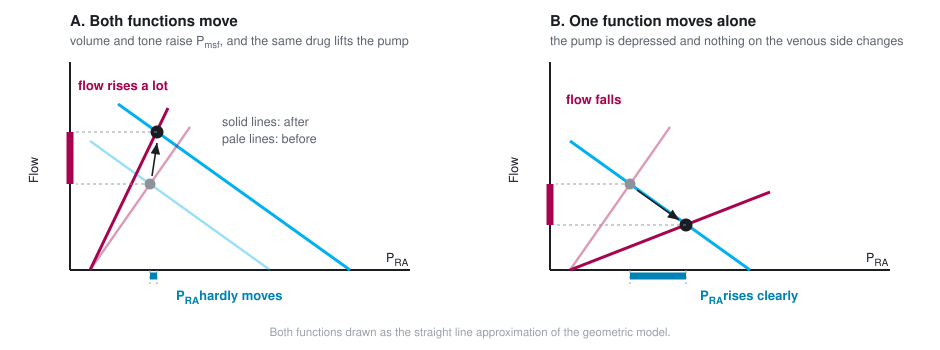
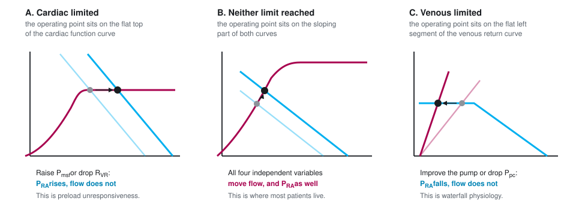

Module I10
Tying the loop together
The four interfaces have now been built one at a time. Module I4 took the left ventricle to the arterial system, Module I5 and Module I6 took the gradient through the arterioles and the microcirculation, Module I7 and Module I8 filled the reservoir and drained it back to the right atrium, and Module I9 carried the whole output across the lungs and handed it to the left heart. Each module ended by saying what it passed to the next one. None of them could say what the assembled circulation does, because a series of boundaries described one at a time is still a list.
This module is the assembly. It has one subject, the point at which the circulation actually operates, and three claims about it. The first is that the operating point is not a picture but a solution: two functions of the same two variables have exactly one pair of values consistent with both, and that pair can be calculated rather than sketched. The second is that this solution answers the question Module I1 raised under Principle 2 and deliberately deferred, which is in what sense the intersection is a piece of bookkeeping rather than a causal claim. The third is the one that matters most at the bedside: a single real intervention almost never moves one curve. It moves both, and the arithmetic of two curves moving together explains an observation that otherwise looks like a defect in our monitoring, which is that enormous changes in cardiac output routinely occur with almost no change in right atrial pressure.
Nothing here re-derives an interface. Where a mechanism belongs to another module it is named and linked, and the reader is expected to go back for it. What is new is the behaviour of the four of them treated as one system, and the small amount of algebra that makes that behaviour predictable instead of merely describable.
Two functions of the same two variables
Module N5 drew the two curves on shared axes and identified their crossing as the operating point. It is worth being precise about why that construction is allowed, because the licence is narrower than it looks. A venous return curve states, for every value of right atrial pressure, what flow the vasculature will deliver. A cardiac function curve states, for every value of right atrial pressure, what flow the heart will produce. Both are functions of the same independent variable and both return the same dependent variable. In the steady state the circulation is closed, so those two flows must be the same number. Only one pair of values satisfies both statements at once, and the graphical crossing is simply where that pair lies.

Read that way, the picture stops being a diagram to be memorised and becomes a pair of simultaneous equations. Jacobsohn, Chorn and O'Connor argued thirty years ago that drawing the two curves for each clinical situation clarifies the altered circulatory state and defines the treatment options. What their review left implicit is that the drawing is dispensable, because the solution can be written down.
Solving the intersection instead of sketching it
Kenny has set out the simplest transparent version of the algebra, in which each curve is approximated over its working range by a straight line and the two lines form two right triangles sharing an apex. The apex is the operating point. Its height is the flow, and its position along the horizontal axis is the right atrial pressure.
![Two right triangles sharing an apex on axes of flow against right atrial pressure. The left triangle has its base from the pericardial pressure to the right atrial pressure and its hypotenuse is the cardiac function line with slope cardiac conductance. The right triangle has its base from the right atrial pressure to the mean systemic filling pressure and its hypotenuse is the venous return line with slope venous conductance. The shared apex is labelled the operating point and its height is labelled Q.](img/i10-geometric-model.svg)
The left triangle is the cardiac function line. Its base runs from the pressure surrounding the heart, which is the pericardial pressure Ppc, to the measured right atrial pressure, so the base is the transmural pressure that actually distends the chamber. The hypotenuse slope is the change in cardiac output per mmHg of transmural filling pressure, a conductance whose reciprocal Kenny names the cardiac resistance, Rcardiac. The right triangle is the venous return line. Its base is Pmsf − PRA and its slope is the venous conductance, whose reciprocal is the resistance to venous return that Module I8 takes apart. Setting the two heights equal and solving gives a single expression.
PRA = (Q × Rcardiac) + PpcQ, total circulatory flow, which in the steady state is cardiac output and venous return alike (L/min); Pmsf, mean systemic filling pressure (mmHg); Ppc, the pressure surrounding the heart, taken as pericardial pressure (mmHg); RVR, resistance to venous return (mmHg per L/min); Rcardiac, cardiac resistance, the reciprocal of the slope of the cardiac function curve, in the same units. The second line simply reads the height of the left triangle back onto the horizontal axis.
The form of the first line should look familiar, because it is the same hydraulic skeleton that Module I1 called Principle 3, applied to the whole circulation rather than to one boundary. A pressure difference divided by a sum of resistances in series gives a flow. What is new is which pressures appear. The driving pressure for the entire circulation is not the mean arterial pressure and not the gradient across any single interface. It is the mean systemic filling pressure less the pressure surrounding the heart, and the two resistances in series are the vasculature's and the heart's.
Writing the heart as a resistance takes some getting used to and it is worth being clear that Rcardiac is not a Poiseuille resistance. Nothing is being obstructed. It is the reciprocal of the slope of the cardiac function curve, so a strong heart, which produces a large increment of flow for a small increment of filling pressure, has a low Rcardiac, and a failing heart has a high one. The value of putting it in these units is that it makes the pump and the circuit commensurable, and the equation then says something no verbal account of the two curves can say: the heart and the vasculature limit flow additively. Neither one sets the output. They share a single driving pressure between them in proportion to their resistances.
Four independent variables and two dependent ones
The equation partitions the circulation into things that can be changed and things that report the result. On the right hand side are four quantities that a disease or a drug can act on directly. On the left hand side are the two numbers the bedside actually measures. Kenny's framing is the clearest statement of the consequence: cardiac output and right atrial pressure are outputs of the system, not determinants of it. Both are decided simultaneously by the four independent variables, and neither can be treated as an input to the other.
| Independent variable | What it physically is | Where its mechanism lives | Effect on Q | Effect on PRA |
|---|---|---|---|---|
| Pmsf | Stressed volume divided by systemic compliance, generated in the small veins and venules | I7 for the reservoir, I8 for the levers that move it | ↑ | ↑ |
| RVR | A compliance-weighted composite across parallel beds, sitting mostly in the great veins | I8 | ↓ | ↓ |
| Rcardiac | The reciprocal slope of the cardiac function curve, set by contractility, rate and afterload on both ventricles | I4 for the left, I9 for the right | ↓ | ↑ |
| Ppc | The pressure surrounding the heart: pleural pressure, plus transmitted airway pressure, plus pericardial recoil | I3 for transmural pressure, I12 for the breath | ↓ | ↑ |
The arrow columns show the effect of raising each variable, with the other three held still. Two features of that table do the work for the rest of the module. The first is that no independent variable moves flow without also moving right atrial pressure, which is why a right atrial pressure is never uninformative even though it is frequently uninterpretable on its own. The second is that the two columns disagree in sign for two of the four variables and agree for the other two. That single fact is the whole diagnostic content of watching the two numbers together, and it is developed below.
The fourth row is the one most often left out of the classical two-curve teaching, and leaving it out is what makes heart-lung interaction look like a separate subject. It is not separate. The pressure surrounding the heart is a term in the equation that can determine cardiac output, and every breath changes it. Marini, Culver and Butler demonstrated the point cleanly in fourteen anaesthetised dogs, constructing ventricular function curves with venous return controlled through an external circuit and stepped from 1 to 4.5 L/min, with and without 15 cmH2O of PEEP. Curves plotted against transmural pressure on and off PEEP were statistically indistinguishable. Their conclusion is precisely the one the equation predicts: the haemodynamic changes produced by PEEP are the combined effects of reduced preload and raised juxtacardiac pressure, with no ventricular dysfunction required to explain them. That interpretation, however, assumes that PEEP has not produced substantial hyperinflation or overdistension. When pulmonary vascular resistance rises disproportionately, the resulting increase in RV afterload can itself impair right ventricular function and contribute to the fall in cardiac output. This mechanism was introduced briefly in Module I9 (opens in a new tab) and is explored in greater depth in the heart-lung interaction module, Module I12 (opens in a new tab).
In what sense the intersection is bookkeeping
Module I1 introduced the two-curve diagram, warned that it is a constraint rather than a mechanism, summarised the Beard and Feigl objection and the CrossTalk exchange that followed, and deferred the resolution to this module. The resolution is available now that the algebra is on the page, and it is more satisfying than a compromise.
Start with the fact that is easiest to forget. Guyton himself did not claim that right atrial pressure drives cardiac output. In the 1955 paper that introduced the superimposed curves he wrote that right atrial pressure is not one of the primary determinants of cardiac output but is itself determined simultaneously along with cardiac output. The causal reading that later teaching attached to the diagram, in which a lower right atrial pressure produces more venous return, is a reading of one axis of a graph, and it is not in the original claim.
What the diagram does claim is a constraint. Given the four independent variables, only one flow and one right atrial pressure are simultaneously consistent with the properties of the heart and the properties of the vasculature. That is a genuine and useful statement, and it is the sense in which the intersection is bookkeeping: it tells you that the books must balance and where they balance, without telling you which entry was made first. Berlin and Bakker's formulation is the one to carry, that central venous pressure is an important physiologic parameter but is not an independent variable determining cardiac output.
The geometric model also dissolves the historical argument that made the causal question look unresolvable. Guyton and Levy performed apparently contradictory experiments and drew apparently contradictory conclusions. Kenny and Möller point out why both were right. Guyton varied the height of a collapsible tube, which is to say he varied the pressure surrounding the right atrium, and then adjusted pump function to bring the tube wall back to a transmural pressure near zero, generating a series of pressure and flow pairs that he plotted as a venous return curve. Levy varied cardiac function alone and generated pressure and flow pairs that way. In neither experiment was right atrial pressure an independent variable, and in neither was flow. Each investigator was moving one of the four terms on the right hand side of the equation and reading the apex that resulted. The disagreement was about which term had been moved, not about the physiology.
None of this makes the framework uncontroversial. Brengelmann continues to argue that the classical formulation gets the right answer for the wrong reason, and Module I8 sets out that dispute. What the equation adds is a way of holding the model that the dispute does not touch: treated as simultaneous constraints among four manipulable quantities and two measured ones, it makes correct directional predictions and requires no claim about which variable causes which. Henderson and colleagues, reviewing the seminal experiments and the criticisms of them, land in the same place, and note that recently reported human measurements support the theoretical and animal work.
What moves one curve, and why that is the rare case
The textbook treatment of the two curves moves one at a time, because that is how a mechanism is taught. Module N4 did it that way and so did every module since. It is worth one figure to consolidate what those single-curve moves are, and then the rest of the module can leave them behind.


Two of the four independent variables move an intercept and two move a slope. Pmsf is the intercept of the venous return line on the pressure axis and RVR is its slope. Ppc is the intercept of the cardiac function line and Rcardiac is its slope. That is the entire taxonomy, and every mechanism in the preceding six modules acts through one of those four.
The difficulty is that almost nothing a clinician does acts through only one. A fluid bolus is the closest thing to a pure single-variable intervention available, and even a fluid bolus moves three of the four. The next section is the useful part of the module for that reason.
What a real intervention does to both curves
Funk, Jacobsohn and Kumar's two-part review is the best worked source for this, because it traces each intervention as a sequence of separate movements of the two curves rather than as a single arrow. Taking their sequences in turn, and adding the human measurements that have appeared since, gives a picture of therapy that is considerably less tidy than the Novice version and considerably more predictive.
A fluid bolus
The first movement is the expected one. The stressed fraction of the infused volume raises Pmsf, and the venous return line shifts to the right in parallel, intersecting the cardiac function curve at a higher flow. Module I7 is where the arithmetic of how much of an infused litre survives to become stressed volume lives, and Module I8 gives the measured size of the Pmsf rise in ventilated patients. That first movement, however, does not account for the whole of the flow increase.
The second movement is haemodilution. Red cells are a substantial component of blood viscosity, viscosity is a component of resistance on both the venous and the arterial sides, and a large crystalloid or colloid infusion reduces it. RVR therefore falls and the venous return line steepens as well as shifting. The third movement follows from the same viscosity change acting on the pulmonary circulation, where a reduced pulmonary arterial load lowers Rcardiac for the right ventricle and lifts the cardiac function curve.
A fourth movement was not in the 1955 framework at all and has been measured only recently. Monge García and colleagues studied 81 septic shock patients before and after a fluid challenge and found that volume expansion significantly reduced arterial load, with effective arterial elastance falling from 1.68 to 1.57 mmHg/mL and systemic vascular resistance from 1035 to 928 dyn·s·cm−5. In the subgroup of preload responders whose arterial pressure did not change, elastance fell from 1.74 to 1.55 mmHg/mL, with both the resistive and the pulsatile components contributing. Part of that fall is definitional rather than purely mechanical, however: because arterial elastance is calculated as end-systolic pressure divided by stroke volume, a rise in stroke volume alone lowers the calculated value even when end-systolic pressure and true arterial load are unchanged, so the finding is better read as a plausible reduction in load than as a clean isolation of vasodilatation from the arithmetic of the ratio. Their conclusion answers a question that puzzles trainees constantly, which is why a patient can raise cardiac output after fluid without raising blood pressure: 54 of the 81 patients were preload responders and only 24 of those were also pressure responders. A falling arterial load is itself a fall in left ventricular afterload, so this fourth movement lifts the cardiac function curve again by a route entirely separate from viscosity.
Guarracino, Bertini and Pinsky measured the composite result in 55 patients resuscitated according to the Surviving Sepsis Guidelines. Volume expansion raised mean arterial pressure, cardiac index, right atrial pressure, the mean systemic pressure analogue and the venous return pressure gradient, while also increasing contractility as end-systolic elastance, an effect the authors attributed at least in part to improved coronary perfusion as arterial pressure was restored. At the same time, heart rate and arterial elastance fell, so ventricular-arterial coupling moved toward normal. But the pressure and flow responses were not the same: only 35 of the 55 patients reached a mean arterial pressure above 65 mmHg. This distinction introduces another useful arterial concept, dynamic arterial elastance, calculated as the ratio of pulse pressure variation to stroke volume variation (PPV/SVV). Before volume expansion, dynamic arterial elastance was substantially higher in patients whose arterial pressure subsequently responded than in those whose pressure did not. Preload responsiveness therefore asks whether increasing preload will increase flow, whereas dynamic arterial elastance asks a different question: how effectively will that change in flow be translated into arterial pressure? We will return to its physiology, interpretation and limitations in Module I13 (opens in a new tab). A bolus, in other words, can move several parts of the closed loop at once: the venous return intercept, the venous return slope and the cardiac function slope, while simultaneously changing arterial load and ventricular-arterial coupling.
Norepinephrine
Funk's sequence for an agonist with both alpha and beta activity is instructive because the first movement is unfavourable. Alpha-1 mediated vasoconstriction raises the resistance to venous return, which flattens the venous return line and by itself would reduce flow. Only then does the second movement occur, as the same constriction recruits unstressed volume out of the capacitance beds and shifts the venous return intercept to the right. The third movement is a modest lift of the cardiac function curve, smaller than an inodilator would produce because the direct inotropic effect is partly offset by the rise in ventricular afterload.
The human numbers for the first two movements, and for what happens when the drug is withdrawn, are in Module I8 (opens in a new tab). What belongs here is the geometry. Two of the three movements act on the venous return line in opposite directions, so the net effect on flow is the difference between two comparable quantities, and small differences between patients in venous capacitance and in remaining unstressed reserve help decide the sign. That is one structural reason the same dose increment helps one patient and does little for the next. But these venous effects coexist with what norepinephrine is doing to the ventricle and arterial system. In Guarracino's cohort, norepinephrine raised arterial elastance, right atrial pressure and the mean systemic pressure analogue while lowering heart rate, pulse pressure variation and left ventricular ejection efficiency when the group was considered as a whole. Only 12 of the 20 patients treated with norepinephrine reached a mean arterial pressure above 65 mmHg. Yet the subgroup analysis showed that this average concealed markedly different ventricular responses. Patients who responded to norepinephrine with an increase in cardiac output increased end-systolic elastance and improved ventricular-arterial coupling, whereas nonresponders did not. Similarly, patients who achieved the arterial-pressure target entered the norepinephrine step with greater contractile reserve. Thus norepinephrine can simultaneously recruit stressed volume and raise the mean systemic pressure analogue, increase resistance to venous return and ventricular afterload, and, in some patients, recruit enough contractility to accommodate that greater load. Whether pressure and flow ultimately rise therefore depends on the balance of all of these movements, not on any one of them in isolation.
An inotrope, and the trap in the trajectory
An inodilator lowers Rcardiac, which is the intended effect, and simultaneously lowers Pmsf by venodilating the capacitance beds, which is not. Both movements raise flow only if the first is larger, and the second shifts the venous return line to the left just as the cardiac function line is steepening. The operating point therefore travels up and sharply to the left, and the fall in right atrial pressure is often the largest single change on the chart. In Guarracino's study dobutamine, given to the six patients still hypotensive after norepinephrine, raised end-systolic elastance, mean arterial pressure, cardiac index and ejection efficiency while lowering heart rate, right atrial pressure and the coupling ratio, which is exactly that trajectory.
The trap is what the falling right atrial pressure invites. A clinician watching the number fall while the patient improves will read it as evidence that the patient has become underfilled, and give volume. In a patient whose operating point has moved onto the steep part of the venous return line, that will work. In one whose cardiac function curve has flattened, it will not, and the fall in right atrial pressure was reporting the change in the slope of the cardiac line rather than anything about volume.
A positive pressure breath, and the moment of intubation
This is the case where all four independent variables move, and it is the reason the pericardial term earns its place in the equation. Take them in order. Airway pressure transmitted to the pleural space raises Ppc, which shifts the cardiac function curve to the right in parallel. The adrenergic response to positive pressure, together with the rise in abdominal pressure produced by diaphragmatic descent, reduces venous compliance and converts unstressed to stressed volume, so Pmsf rises and the venous return line shifts right as well. Compression of the intrathoracic veins and the vena cava raises RVR and flattens the venous return line. Rising pulmonary vascular resistance raises Rcardiac for the right ventricle.
Two of those four movements would raise flow and two would lower it, so the net effect is genuinely uncertain in advance, which is the correct clinical intuition. The one thing the model does predict without ambiguity is the direction of the right atrial pressure, because Ppc appears with a positive sign in the expression for PRA. Funk's part two makes the point sharply by dropping perpendiculars from the operating points onto the pressure axis: under positive pressure ventilation right atrial pressure rises even though cardiac output has fallen. A number that moves in the opposite direction to the flow it is supposed to inform you about is worse than no number, and it is the reason a right atrial pressure cannot serve as the endpoint for a resuscitation across a change in ventilatory mode.
One caution about the received account of intubation. The deck version of this teaching, and Funk's own figure, describe the cardiac function curve as both shifted right and depressed by positive pressure, the depression attributed to right ventricular afterload. Marini's transmural measurements, described above, found no such depression at 15 cmH2O of PEEP in animals with normal lungs, and attributed the whole effect to reduced preload plus raised juxtacardiac pressure. The two findings are reconcilable and the reconciliation is clinically useful: in a normal pulmonary circulation, positive pressure moves Ppc and leaves the slope of the cardiac function curve alone, while in a lung that is injured, overdistended, hypoxaemic or hypercapnic the pulmonary vascular load genuinely rises and Rcardiac rises with it. Module I9 gives the determinants of that load and the evidence for them. The practical translation is that the ventilator harms the circulation of a patient with normal lungs mainly through the pressure it puts around the heart, and harms the circulation of a patient with acute respiratory distress syndrome through both routes at once.
Why flow moves a lot and right atrial pressure hardly moves
Put the equation to work on numbers and the observation that motivates the whole model appears immediately. The values below are illustrative rather than measured, chosen to be near the conductances reported for a 70 kg adult, and their purpose is to show the shape of the behaviour rather than to be looked up.
| State | Pmsf | Ppc | RVR | Rcardiac | Q | PRA |
|---|---|---|---|---|---|---|
| Baseline, spontaneously breathing | 8 | −3 | 1.4 | 0.6 | 5.5 | 0.3 |
| Fluid alone | 12 | −3 | 1.4 | 0.6 | 7.5 | 1.5 |
| Pump depressed alone | 8 | −3 | 1.4 | 1.8 | 3.4 | 3.2 |
| Fluid plus inotropy | 12 | −3 | 1.4 | 0.4 | 8.3 | 0.3 |
| Intubated, reflexes intact | 12 | +3 | 1.8 | 0.8 | 3.5 | 5.8 |
| Intubated, reflexes abolished at induction | 7 | +3 | 1.8 | 0.8 | 1.5 | 4.2 |
Pressures are in mmHg, resistances in mmHg per L/min and flow in L/min. Read the fourth row against the first. Flow has risen by more than half, from 5.5 to 8.3 L/min, and the right atrial pressure has not moved at all. Nothing has been contrived to produce that result. It happens because the fluid pushed the venous return intercept to the right while the inotropy steepened the cardiac function line, and the two displacements of the apex along the pressure axis were in opposite directions and nearly equal, while both displacements along the flow axis were upward and added.

The same conclusion falls out of the algebra without any picture. Flow depends on the sum of the two resistances, while right atrial pressure is the flow multiplied by the cardiac resistance alone. In a heart with a well preserved slope, Rcardiac is a small fraction of the total, so even a large change in flow is multiplied by a small number before it reaches the pressure axis. Right atrial pressure is insensitive to flow precisely to the extent that the heart is working well, which is a much more useful statement than the familiar complaint that central venous pressure correlates poorly with cardiac output.
Exercise is the extreme demonstration and there are human measurements. Notarius and Magder compared central venous pressure from rest to the onset of upright exercise in four healthy subjects and six patients after heart transplantation, who have a delayed cardiac response. Central venous pressure rose immediately by 4.0 (S.D. +/- 0.4 mmHg) in the normal subjects and 4.6 (S.D. +/- 0.6 mmHg) in the transplant recipients, which is the muscle pump shifting blood centrally in both groups. After three minutes the difference appeared. In the normal subjects central venous pressure stayed put, at 2.0 (S.D. +/- 1.1 mmHg) against 2.6 (S.D. +/- 1.8) at onset, while in the transplant recipients it rose further, to 7.0 (S.D. +/- 0.8 mmHg) against 3.5 (S.D. +/- 1.1) at onset. The circuit did the same thing in both groups. What differed was whether the cardiac function curve moved with it. A normal heart holds the operating point at almost the same pressure while flow multiplies, and a heart that cannot steepen its curve is forced to buy the extra flow with pressure.
Magder, Famulari and Gariepy show how much has to change for the circuit to deliver those flows at all. Modelling a 70 kg adult with two parallel venous compartments of different time constants, adjustments to cardiac and circuit parameters alone took cardiac output only from 5 to 15.6 L/min, because volume accumulated in the slow muscle compartment. Adding the muscle pump, which decompresses that compartment, allowed 23.4 L/min. A fivefold cardiac output is a redistribution achievement, and the heart's contribution is to keep Rcardiac low enough that the extra flow is not paid for in filling pressure.
What it means when right atrial pressure does move
Module I1 gave the two-line version of this inference under Principle 2, that a falling cardiac output with a rising right atrial pressure localises the problem to the pump and a falling cardiac output with a falling right atrial pressure localises it to the circuit. The equation extends that inference in two directions. It adds the pericardial term, which produces a third mechanism for the first pattern, and it adds the case where the pressure does not move at all, which is the one clinicians most often misread as an absent response.
| Q | PRA | Which variable moved | What to check next |
|---|---|---|---|
| ↓ | ↑ | Rcardiac rose, or Ppc rose | Separate them: a rise in the pressure surrounding the heart leaves the transmural filling pressure low, so look at airway pressure, at intra-abdominal pressure and at the pericardium before treating the pump |
| ↓ | ↓ | Pmsf fell, or RVR rose | Volume, venous tone or an obstruction to caval flow. The venous return curve dropped and the heart is following it down its own curve |
| ↑ | ↑ | Pmsf rose, or RVR fell | The intervention worked through the circuit. Watch how much pressure each increment of flow now costs, because that ratio is Rcardiac |
| ↑ | ↓ | Rcardiac fell, or Ppc fell | The pump or its surroundings improved. Do not read the falling pressure as new hypovolaemia |
| ↑ | ↔ | Two variables moved in opposing directions along the pressure axis | Nothing is wrong. This is the expected signature of an effective intervention and of normal exercise |
| ↔ | ↑ | Pmsf or RVR moved while the operating point sat on the flat top of the cardiac function curve | Preload unresponsiveness. Further volume will buy filling pressure and no flow |
Guarracino's study supplies the strongest human support for reading the table this way. Across 55 patients and every step of a guideline-driven resuscitation, including volume, norepinephrine and dobutamine, changes in cardiac index were proportional to changes in the venous return pressure gradient independently of which treatment produced them. Whatever the drug, flow followed the gradient. That is what it means for the loop to be one system.
Where the operating point sits, and why that changes everything
The equation above assumes that both curves are sloping where they cross. Neither one slopes everywhere. The cardiac function curve flattens at high filling pressures, and the venous return curve flattens to the left of the collapse pressure of the great veins, which is the flow limitation Module I8 derives. When the operating point lands on either flat segment, one whole side of the equation drops out.

Cardiac limitation is the first case, and it is the same thing as preload unresponsiveness stated in the vocabulary of the model. When the apex sits above the pressure at which the cardiac function curve plateaus, flow is set by the plateau height and by the pressure surrounding the heart, and by nothing on the venous side at all. Raising Pmsf or lowering RVR then moves right atrial pressure and does not move flow. This is a considerably more precise statement than the usual one about the flat part of the cardiac function curve, because it identifies exactly which two variables have been rendered inert and predicts what the failed intervention will do instead: it will raise the filling pressure, and it will therefore raise the outflow pressure that every organ has to drain into, which is the tissue afterload that Module I7 identifies as the defining hazard of Interface III.
Venous limitation is the mirror image, and it is the less familiar half. When the apex sits on the flat segment of the venous return curve, flow is set by Pmsf, by RVR and by the collapse pressure, and improving the pump changes nothing about flow. It lowers right atrial pressure and that is all it does. Module I8 made the same point as a statement about the heart not being able to pull. The geometric version adds the diagnostic signature: an inotrope that lowers the filling pressure without moving cardiac output has not failed for a pharmacological reason, it has been applied to a circulation whose limit is on the other side of the loop.
Following a perturbation all the way round
The last thing the assembled model offers is a discipline for tracing consequences. Perturb one interface and the effect does not stop there, because the four relationships share a single flow term and two of them share a pressure. Two traversals show the pattern.
Starting at Interface IV: an acute rise in pulmonary vascular load
A pulmonary embolism, an episode of hypoxaemic vasoconstriction, or a period of overdistension raises the load on the right ventricle. In the vocabulary of this module the right ventricle is part of the cardiac function curve, so Rcardiac rises and the curve flattens. The apex slides down and to the right: flow falls and right atrial pressure rises, which is the first row of the diagnostic table.
Now follow the consequences round. The rise in right atrial pressure narrows the Pmsf minus PRA gradient at Interface III, so the venous side delivers less at the very moment the heart is accepting less. If the right ventricle dilates, it stretches the pericardium and raises Ppc, which shifts the cardiac function curve further right and, through the septal mechanics of Module I9, reduces the volume the left ventricle can accept at any filling pressure. The falling flow reaches Interface I as a falling mean arterial pressure. Because the right coronary artery is perfused from that pressure and the right ventricle is now generating a high systolic pressure, coronary perfusion of the failing chamber falls exactly as its wall stress and its oxygen demand rise, and the loop has closed: an Interface IV lesion has become an Interface IV lesion again, by way of Interfaces III and I. That circuit is the spiral Module I9 describes, and the reason it is a spiral rather than a decline is that the loop is closed.
The therapeutic reading follows from where the loop can be broken. Restoring systemic pressure interrupts the supply arm without touching the load. Reducing the pulmonary load lowers Rcardiac directly. Giving volume raises Pmsf, which in the middle region would help, but in a ventricle already at cardiac limitation raises PRA and Ppc instead and makes two other links worse.
Starting at Interface II: distributive shock and its treatment
Sepsis begins upstream. Arteriolar dilatation lowers the critical closing pressure and the systemic vascular resistance at Interfaces I and II, described in Module I5. Venodilatation converts stressed volume back to unstressed volume, so Pmsf falls and the venous return intercept shifts left, described in Module I7. The same dilatation lowers RVR, so the venous return line steepens. The catecholamine response lowers Rcardiac. Three of the four independent variables have moved and they do not all push the same way.
Put them through the equation and the classical distributive profile is the only possible answer. A lower numerator would reduce flow, but both resistances in the denominator have fallen and their sum has fallen more, so flow is preserved or raised. Right atrial pressure is the flow multiplied by a now smaller cardiac resistance, so it is low. Low filling pressure and preserved or high cardiac output is not a fingerprint to be memorised. It is a division.
| Shock type | CO | RAP | Pmsf | Which term moved first |
|---|---|---|---|---|
| Cardiogenic, left ventricular | ↓ | ↑ | ↔ or ↑ | Rcardiac rose |
| Acute right ventricular pressure overload | ↓ | ↑ | ↔ or ↑ | Rcardiac rose, then Ppc rose as the chamber dilated |
| Tamponade | ↓ | ↑ | ↔ | Ppc rose, with the pump intrinsically normal |
| Hypovolaemic | ↓ | ↓ | ↓ | Pmsf fell |
| Distributive | ↔ or ↑ | ↓ | ↓ | Pmsf fell, and both resistances fell further |
The shock-type grid in Module N5 carries the same rows with more columns, and it was presented there as the readout of the physiology rather than as a table to learn. This is that promise being kept. Two columns have been added that the Novice grid could not include, because neither of them is measured on a routine chart, and they are the two that decide the treatment. The third row is the clearest case: tamponade and left ventricular failure produce the same three measured numbers and differ only in which independent variable moved, and the intervention that helps one is close to useless in the other.
What the model is good for, and where it stops
Four limitations are worth stating plainly, because a model applied outside its range is worse than no model.
The first is the straight lines. Real curves bend, and the two flat regions above are precisely where the linear solution fails, which is why they had to be treated as separate cases. The second is measurement: of the four independent variables, one is estimated only by specialised manoeuvres, one is inferred rather than measured, and two are not obtainable at the bedside at all. Module I8 reviews the methods for estimating the mean systemic filling pressure and their disagreement about absolute values, and Berger and Takala's review of the determinants of venous return under positive pressure is the fuller treatment. The framework is a way of reasoning about directions of change, not a calculator. The third is that the debate about causal interpretation remains open, and all this module has done is state the model in a form that survives the objection.
The fourth is the most interesting, because it is a genuine incompleteness rather than an approximation. Everything above treats the circulation as one loop with one resistance to venous return and one atrial pressure. There are two atria, and the pulmonary circulation is a second reservoir with its own compliance. Uemura and colleagues extended Guyton's framework to handle this, characterising venous return for a given stressed volume as a flat surface in three dimensions, a function of both right and left atrial pressures. In seven dogs under total heart bypass the surface was strikingly flat, with coefficients of determination between 0.92 and 0.99, and the averaged relationship gave venous return as the stressed volume divided by 0.129 less 19.61 times right atrial pressure less 3.49 times left atrial pressure. The coefficients matter as much as the fit. Right atrial pressure carries more than five times the weight of left atrial pressure in setting total flow, which is the quantitative version of a claim Module I9 makes qualitatively about the right heart's first job. Tested prospectively in twelve further animals under normal and heart failure conditions, the standard surface predicted cardiac output, right atrial pressure and left atrial pressure well enough to be useful, which suggests the parameters are stable across individuals.
Against those limitations, set what the model does. It converts a diagram into a solution. It names four things that can be changed and two that can only be read. It predicts the direction of the response to every common intervention, and it explains, without appeal to measurement error, why the most reliable sign of a successful resuscitation is a large change in flow accompanied by almost no change in the pressure everybody watches.
The loop is now assembled, and what remains is to interrogate it. Module I11 takes the tools that probe the operating point without moving it permanently, and asks what each one can and cannot support. Module I12 and Module I13 take the single perturbation that arrives twelve to twenty times a minute whether or not anyone orders it, the breath, and turn it from noise into a test. Module I14, Module I15 and Module I16 take the measurements themselves apart. And Module I17 puts the whole pathway in front of real patients. The integrating account of heart-lung physiology, in which the pressure surrounding the heart becomes the subject rather than a term, is left to the Expert pathway.
References
- Guyton AC. Determination of cardiac output by equating venous return curves with cardiac response curves. Physiol Rev. 1955;35(1):123-129. doi:10.1152/physrev.1955.35.1.123.
- Guyton AC, Lindsey AW, Kaufmann BN. Effect of mean circulatory filling pressure and other peripheral circulatory factors on cardiac output. Am J Physiol. 1955;180(3):463-468. doi:10.1152/ajplegacy.1955.180.3.463.
- Guyton AC, Lindsey AW, Abernathy B, Richardson T. Venous return at various right atrial pressures and the normal venous return curve. Am J Physiol. 1957;189(3):609-615. doi:10.1152/ajplegacy.1957.189.3.609.
- Levy MN. The cardiac and vascular factors that determine systemic blood flow. Circ Res. 1979;44(6):739-747. doi:10.1161/01.res.44.6.739.
- Sylvester JT, Goldberg HS, Permutt S. The role of the vasculature in the regulation of cardiac output. Clin Chest Med. 1983;4(2):111-126. PMID 6342918.
- Jacobsohn E, Chorn R, O'Connor M. The role of the vasculature in regulating venous return and cardiac output: historical and graphical approach. Can J Anaesth. 1997;44(8):849-867. doi:10.1007/BF03013162.
- Marini JJ, Culver BH, Butler J. Effect of positive end-expiratory pressure on canine ventricular function curves. J Appl Physiol Respir Environ Exerc Physiol. 1981;51(6):1367-1374. doi:10.1152/jappl.1981.51.6.1367.
- Notarius CF, Magder S. Central venous pressure during exercise: role of muscle pump. Can J Physiol Pharmacol. 1996;74(6):647-651. PMID 8909774.
- Uemura K, Sugimachi M, Kawada T, Kamiya A, Jin Y, Kashihara K, Sunagawa K. A novel framework of circulatory equilibrium. Am J Physiol Heart Circ Physiol. 2004;286(6):H2376-H2385. doi:10.1152/ajpheart.00654.2003.
- Henderson WR, Griesdale DE, Walley KR, Sheel AW. Clinical review: Guyton, the role of mean circulatory filling pressure and right atrial pressure in controlling cardiac output. Crit Care. 2010;14(6):243. doi:10.1186/cc9247. Free full text.
- Beard DA, Feigl EO. Understanding Guyton's venous return curves. Am J Physiol Heart Circ Physiol. 2011;301(3):H629-H633. doi:10.1152/ajpheart.00228.2011. Free full text.
- Magder S. Bench-to-bedside review: an approach to hemodynamic monitoring, Guyton at the bedside. Crit Care. 2012;16(5):236. doi:10.1186/cc11395. Free full text.
- Funk DJ, Jacobsohn E, Kumar A. The role of venous return in critical illness and shock, part I: physiology. Crit Care Med. 2013;41(1):255-262. doi:10.1097/CCM.0b013e3182772ab6.
- Funk DJ, Jacobsohn E, Kumar A. Role of the venous return in critical illness and shock, part II: shock and mechanical ventilation. Crit Care Med. 2013;41(2):573-579. doi:10.1097/CCM.0b013e31827bfc25.
- Berlin DA, Bakker J. Starling curves and central venous pressure. Crit Care. 2015;19(1):55. doi:10.1186/s13054-015-0776-1. Free full text.
- Monge García MI, Guijo González P, Gracia Romero M, Gil Cano A, Oscier C, Rhodes A, Grounds RM, Cecconi M. Effects of fluid administration on arterial load in septic shock patients. Intensive Care Med. 2015;41(7):1247-1255. doi:10.1007/s00134-015-3898-7.
- Magder S. Volume and its relationship to cardiac output and venous return. Crit Care. 2016;20(1):271. doi:10.1186/s13054-016-1438-7. Free full text.
- Magder S. Right atrial pressure in the critically ill: how to measure, what is the value, what are the limitations? Chest. 2017;151(4):908-916. doi:10.1016/j.chest.2016.10.026.
- Berger D, Takala J. Determinants of systemic venous return and the impact of positive pressure ventilation. Ann Transl Med. 2018;6(18):350. doi:10.21037/atm.2018.05.27. Free full text.
- Guarracino F, Bertini P, Pinsky MR. Cardiovascular determinants of resuscitation from sepsis and septic shock. Crit Care. 2019;23(1):118. doi:10.1186/s13054-019-2414-9. Free full text.
- Magder S, Famulari G, Gariepy B. Periodicity, time constants of drainage, and the mechanical determinants of peak cardiac output during exercise. J Appl Physiol (1985). 2019;127(6):1611-1619. doi:10.1152/japplphysiol.00688.2018.
- Brengelmann GL. Venous return, mean systemic pressure and getting the right answer for the wrong reason. Ann Transl Med. 2019;7(8):185. doi:10.21037/atm.2019.03.64. Free full text.
- Kenny JS. A framework for heart-lung interaction and its application to prone position in the acute respiratory distress syndrome. Front Physiol. 2023;14:1230654. doi:10.3389/fphys.2023.1230654. Free full text.
- Kenny JS, Moller PW. The pressure gradient for venous return and its derivatives are ambiguous measures. Intensive Care Med Exp. 2024;12(1):101. doi:10.1186/s40635-024-00692-x. Free full text.
- Kenny JS, Werner Moller P. Venous congestion and the geometry of Guyton. Ann Intensive Care. 2025;15(1):166. doi:10.1186/s13613-025-01593-2. Free full text.
- Rola P, Kattan E, Siuba MT, Haycock K, Crager S, Spiegel R, Hockstein M, Bhardwaj V, Miller A, Kenny JE, Ospina-Tascón GA, Hernandez G. Point of view: a holistic four-interface conceptual model for personalizing shock resuscitation. J Pers Med. 2025;15(5):207. doi:10.3390/jpm15050207. Free full text.